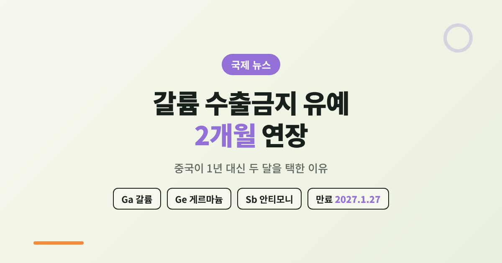
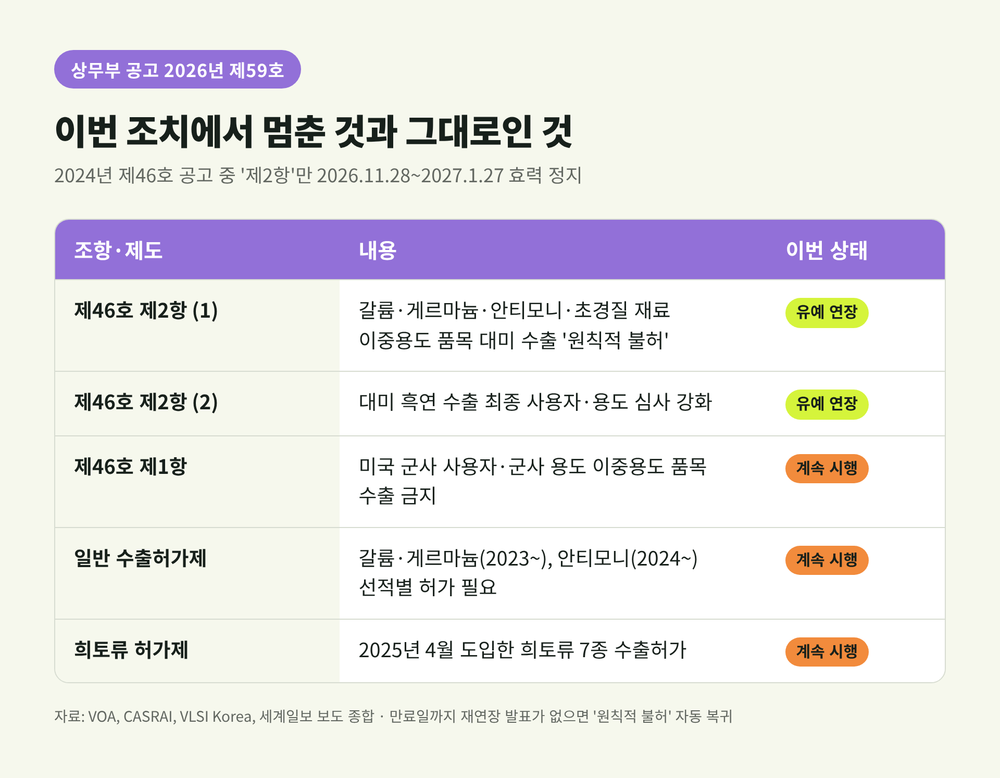
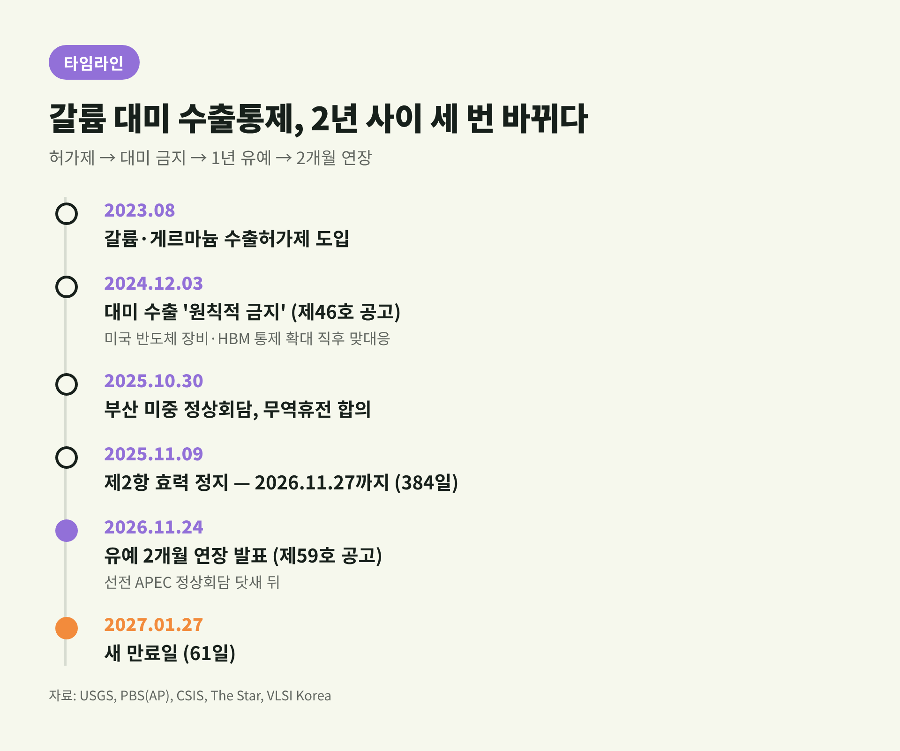
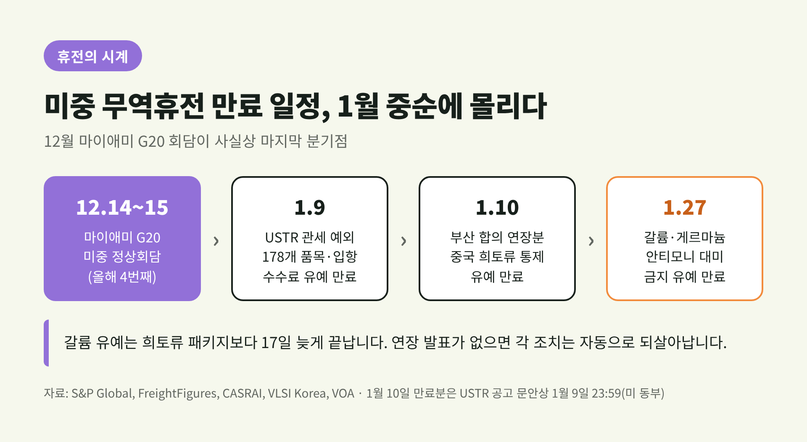
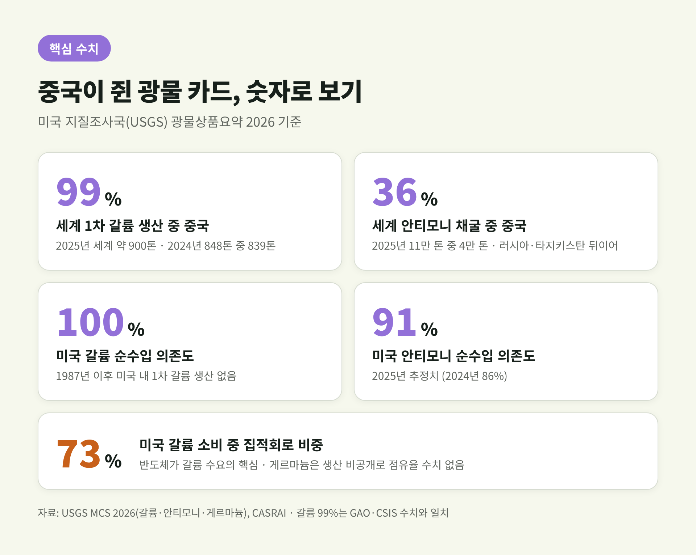
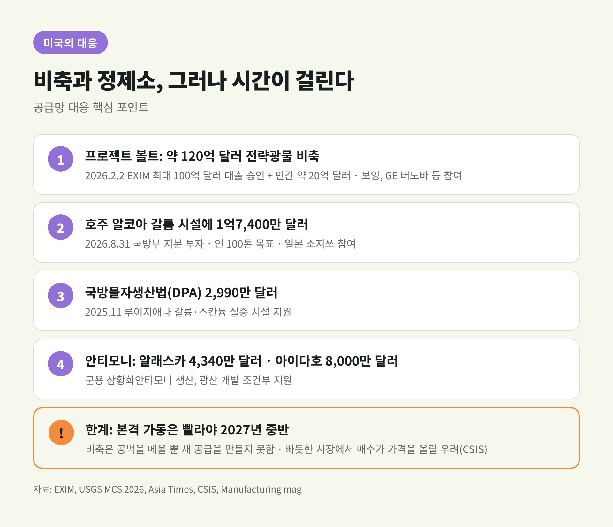
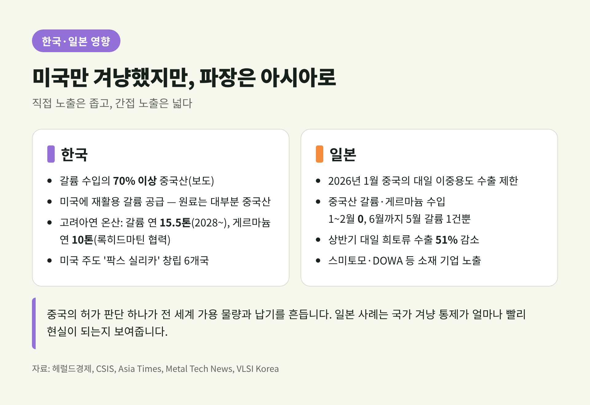

갈륨 수출금지 유예 2개월 연장, 중국이 1년 대신 두 달을 택한 이유
이번 글에서는 중국이 갈륨·게르마늄·안티모니의 대미 수출금지 유예를 두 달만 연장한 결정을 정리해 보겠습니다. 조치의 정확한 범위와 '왜 하필 두 달인가'라는 질문, 그리고 미국과 한국·일본에 미칠 영향을 차례로 짚습니다.
3줄 요약
- 중국 상무부가 11월 24일, 11월 27일 끝날 예정이던 대미 수출금지 유예를 2027년 1월 27일까지 61일 연장했습니다.
- 1년이었던 지난번과 달리 이번엔 두 달입니다. 미중 무역휴전 만료(1월 10일 전후)와 12월 마이애미 G20 정상회담에 기한을 맞췄다는 해석이 많습니다.
- 금지만 멈췄을 뿐 허가제는 그대로입니다. 미국 군사 용도 수출금지도 유지돼, 공급 불안이 끝났다고 보기는 어렵습니다.

■ 무슨 일이 있었나: 끊길 뻔한 유예, 61일 연장
중국 상무부는 11월 24일 '2024년 제46호 공고'의 조정 시행을 계속한다고 발표했습니다. 보도에 따르면 새 공고 번호는 2026년 제59호입니다. 핵심은 제46호 공고 '제2항'의 효력 정지를 11월 28일부터 2027년 1월 27일까지 이어가는 것입니다.
제2항은 두 가지를 담고 있습니다. 첫째, 갈륨·게르마늄·안티모니·초경질 재료 관련 이중용도 품목의 대미 수출을 "원칙적으로 허가하지 않는다"는 조항입니다. 둘째, 미국으로 가는 흑연에 대해 최종 사용자와 용도를 더 엄격히 심사한다는 조항입니다.
직전 유예는 11월 27일 금요일에 끝날 예정이었습니다. 새 기간이 바로 다음 날 시작되니, 공백 없이 이어진 셈입니다. 날짜로 세면 61일입니다. 지난 유예가 384일이었던 것과 대조됩니다.
달라지지 않은 것도 분명히 짚어야 합니다. 미국 군사 사용자나 군사 용도로 가는 이중용도 품목 수출을 금지한 제1항은 한 번도 멈춘 적이 없습니다. 일반 수출허가 절차도 그대로입니다. 미국행 선적 하나하나가 여전히 중국 당국의 승인을 받아야 합니다.
상무부는 연장 이유를 따로 설명하지 않았습니다. 1월 27일 이후 다시 연장할지도 밝히지 않았습니다. 아무 발표가 없으면 '원칙적 불허'가 자동으로 되살아나는 구조입니다.

■ 2년 사이 세 번 바뀐 조치: 금지에서 1년 유예, 다시 두 달로
이 조치의 출발점은 2024년 12월입니다. 미국은 그해 12월 초 반도체 장비와 고대역폭메모리(HBM) 수출통제를 넓히고, 중국 기업 140곳을 수출통제 명단에 올렸습니다. 중국은 바로 다음 날인 12월 3일 제46호 공고로 맞섰습니다. 당시 중국 외교부는 미국의 반도체 통제 강화에 "엄정히 항의했다"고 밝혔습니다.
사실 그 전부터 수출 문은 조금씩 좁아지고 있었습니다. 2023년 8월 갈륨·게르마늄에 수출허가제를 도입했고, 2024년 8월에는 안티모니 수출을 제한했습니다. 2024년 12월의 조치는 이를 '미국만 겨냥한 금지'로 한 단계 끌어올린 것이었습니다.
전환점은 2025년 10월 30일 부산 미중 정상회담이었습니다. 두 정상이 무역휴전에 합의했고, 중국은 11월 9일 제2항의 효력을 2026년 11월 27일까지 멈췄습니다. 같은 시기 2025년 10월에 발표했던 희토류·배터리 소재 통제 확대도 1년 유예했습니다.
예전엔 1년 단위의 비교적 넉넉한 휴전이었습니다. 지금은 두 달짜리 단기 연장입니다. 이 차이가 이번 결정의 의미를 읽는 열쇠입니다.

■ 왜 1년이 아니라 두 달인가
가장 설득력 있는 설명은 '날짜 맞추기'입니다. 미중 무역휴전 자체가 이미 한 차례 짧게 연장돼 있기 때문입니다.
부산 합의는 원래 2026년 11월 10일 끝날 예정이었습니다. 스콧 베선트 미 재무장관은 9월 시진핑 주석의 워싱턴 국빈방문 즈음 이를 2027년 1월 10일까지 연장한다고 밝혔습니다. 미 무역대표부(USTR)도 11월 초 중국산 178개 품목의 관세 예외와 중국 연계 선박 입항 수수료 유예를 1월 9일까지로 늘렸습니다. 중국 역시 11월 9일 제58호 공고로 희토류 관련 6개 통제의 유예를 1월 10일까지 연장했습니다.
갈륨 유예 만료일(1월 27일)은 이 묶음보다 17일 늦습니다. 결국 모든 휴전 조치의 시계가 1월 중순 전후에 함께 멈추도록 맞춰진 셈입니다. 독일마셜펀드(GMF)의 보니 글레이저 인도태평양 프로그램 국장은 이번 조치가 관세 합의 만료와 대략 맞물린다며 "두 달짜리일 뿐"이라고 짚었습니다.
두 번째 이유는 지렛대입니다. 1년을 통째로 내주면 중국이 쥔 카드의 힘이 그만큼 약해집니다. 두 달만 열어두면 12월 14~15일 마이애미 G20 정상회의와 1월 휴전 만료 협상에서 다시 꺼낼 수 있습니다. 글레이저 국장의 표현을 빌리면, 이는 "미국 특정 제한의 유예 연장이지 수출통제 체제의 폐지가 아닙니다".
다만 이것이 곧 '압박'만을 뜻한다고 단정하기는 어렵습니다. 선전 정상회담 닷새 만에, 그리고 기한을 사흘 앞두고 연장을 발표했다는 점에서 휴전을 깨지 않겠다는 신호로 읽는 시각도 있습니다. 블룸버그는 미국이 최근 중국의 첨단 칩 원격 접근을 막는 규정을 내놨는데도 중국이 보복을 자제한 흐름의 연장선으로 봤습니다.

■ 왜 중요한가: 세계 갈륨의 99%가 중국에서 나온다
이 조치가 매번 주목받는 이유는 숫자에 있습니다. 미국 지질조사국(USGS)에 따르면 2025년 세계 1차(저순도) 갈륨 생산 약 900톤 가운데 약 99%가 중국산입니다. 2024년에도 세계 848톤 중 839톤이 중국에서 나왔습니다. 미국 회계감사원(GAO)과 전략국제문제연구소(CSIS)도 같은 99%를 제시합니다.
미국은 1987년 이후 1차 갈륨을 생산하지 않았습니다. 순수입 의존도는 100%입니다. 미국 갈륨 소비의 73%는 집적회로에 쓰입니다.
안티모니는 사정이 조금 다릅니다. 2025년 세계 채굴량 11만 톤 가운데 중국이 4만 톤, 약 36%입니다. 러시아(3만2천 톤)와 타지키스탄(2만2천 톤)도 큰 공급처입니다. 그래도 미국의 안티모니 순수입 의존도는 2025년 91%에 이릅니다. 게르마늄은 생산량 자체가 공개되지 않아 점유율 수치가 없지만, 중국이 최대 생산·수출국이라는 점에는 이견이 없습니다.
쓰임새를 보면 무게가 더 실감납니다. 갈륨은 질화갈륨(GaN)·갈륨비소(GaAs) 같은 화합물 반도체와 레이더, 전력 반도체의 원료입니다. 게르마늄은 광섬유와 적외선·야간투시 장비에, 안티모니는 납축전지·난연제·무기에 들어갑니다. CSIS는 사드(THAAD) 포대 하나에 갈륨이 약 77kg 필요하다고 추산합니다.

■ 유예가 있어도 시장은 따로 움직였다
흥미로운 점은 지난 1년 유예 기간에도 공급이 크게 살아나지 않았다는 사실입니다. CSIS에 따르면 중국의 미가공 갈륨 수출은 2025년 전년보다 94% 줄었고, 2026년에도 회복하지 못했습니다. 미국의 미가공 갈륨 수입에서 중국 비중은 2022년 약 38%에서 2025년 5% 미만으로 떨어졌습니다.
가격은 그 공백을 그대로 보여줍니다. 중국 밖 갈륨 현물가는 2026년 4월 kg당 1,850달러로 사상 최고를 기록했습니다. 9월 기준으로는 서방 창고 가격이 약 2,100달러, 중국 내 가격은 약 247달러였다는 보도도 있습니다. 게르마늄 역시 서방 6,000달러 이상, 중국 약 3,100달러로 두 배 가까이 벌어졌습니다. 안티모니 평균가는 2025년 파운드당 25달러로, 1년 새 두 배를 넘었습니다.
CSIS는 그 원인으로 행정 적체, 군민 겸용 우려, 자국 반도체 기업을 우선하는 산업 전략, 그리고 협상 지렛대를 꼽았습니다. 어느 쪽이든 '금지 유예'와 '실제 공급'은 다른 문제라는 점이 드러난 1년이었습니다.
■ 양측의 논리: 같은 광물, 다른 이야기
중국의 입장은 '대응 조치'입니다. 2024년 금지는 미국의 반도체 수출통제에 대한 맞대응이라는 것이 중국의 일관된 설명입니다. 최근에도 중국 상무부는 미국의 AI 칩 원격 접근 제한에 대해 "강한 불만과 단호한 반대"를 밝히며, 두 정상이 이룬 합의 정신에 어긋난다고 주장했습니다. 허야둥 상무부 대변인은 미국의 새 관세 계획을 두고 "필요한 조치를 취할 권리를 보유한다"고 경고했습니다.
미국의 입장은 '안보와 공급망'입니다. 미국 관리들은 핵심광물을 국가안보의 최우선 과제로 규정하고, 동맹국에 중국 의존을 줄이라고 촉구해 왔습니다. 미국은 반도체 통제를 군사 전용을 막기 위한 정당한 안보 조치로 보고, 광물을 협상 카드로 쓰는 것 자체를 공급망 위험으로 봅니다.
양쪽 모두 상대가 먼저 '무기화'했다고 말합니다. 반도체와 광물이 서로 맞물린 채 협상 테이블에 올라 있는 구조입니다.
■ 미국의 대응: 비축과 정제소, 그러나 시간이 걸린다
미국의 가장 큰 카드는 '프로젝트 볼트'입니다. 2026년 2월 2일 미국 수출입은행(EXIM)이 최대 100억 달러 직접대출을 승인했고, 민간 자본 약 20억 달러를 더해 약 120억 달러 규모의 전략 핵심광물 비축을 꾸렸습니다. 보잉, GE 버노바, 웨스턴디지털 등이 초기 참여 의사를 밝혔습니다.
생산 기반 투자도 이어졌습니다. 미 국방부(전쟁부)는 2025년 11월 국방물자생산법(DPA)으로 루이지애나의 갈륨·스칸듐 실증 시설에 2,990만 달러를 지원했습니다. 2026년 8월 말에는 호주 알코아 와거럽 정제소의 갈륨 시설에 1억7,400만 달러 지분 투자를 발표했습니다. 목표는 연 100톤이고, 일본 소지쓰도 참여합니다. 안티모니 쪽에서는 알래스카 군용 삼황화안티모니 사업에 4,340만 달러, 아이다호 광산에 8,000만 달러 조건부 지원이 결정됐습니다.
한계도 분명합니다. CSIS는 이런 프로젝트들이 빨라야 2027년 중반에야 본격 가동될 것으로 봅니다. 이번 시한까지 미국 내 상업 규모 갈륨·게르마늄 정제소는 없다는 분석도 나옵니다. 빠듯한 시장에서 비축용 매수가 오히려 가격을 밀어올릴 수 있다는 우려까지 제기됩니다. 비축은 공백을 메울 수는 있지만 새로운 공급을 만들지는 못합니다.

■ 한국·일본은 무엇을 봐야 하나
이번 조치는 '미국행' 수출만 겨냥합니다. 그래서 한국 기업이 직접 받는 충격은 미국 기업보다 좁습니다. 그러나 간접 영향은 작지 않습니다. 중국의 허가 판단 하나가 전 세계 가용 물량과 납기를 흔들기 때문입니다.
한국은 갈륨 수입의 70% 이상을 중국에 기대고 있다는 보도가 있습니다. 갈륨은 화합물 반도체와 LED·디스플레이 소재로, 게르마늄은 실리콘게르마늄(SiGe) 공정과 적외선 광학에 쓰입니다. CSIS에 따르면 중국산 직수입이 끊긴 미국은 독일·일본·대만·한국 등에서 재활용 갈륨을 들여왔는데, 그 원료 역시 대부분 중국산입니다. 한국 업체가 미국 공급망의 '우회로' 역할을 하는 만큼, 중국의 심사가 깐깐해지면 그 영향이 한국에도 번질 수 있습니다.
대응 움직임도 있습니다. 고려아연은 약 557억 원을 들여 온산제련소에 갈륨 회수 공정을 짓고, 2028년부터 연 15.5톤 생산을 계획하고 있습니다. 2025년 8월에는 록히드마틴과 손잡고 2028년까지 연 10톤 규모 게르마늄 공장을 세우기로 했습니다. 한국은 2025년 12월 출범한 미국 주도 공급망 연합 '팍스 실리카'의 창립 6개국이기도 합니다.
일본의 사례는 더 직접적인 경고입니다. 중국은 2026년 1월 일본에 대해 갈륨·게르마늄을 포함한 이중용도 품목 수출을 제한했습니다. 그 결과 일본의 중국산 갈륨·게르마늄 수입은 1~2월 '0'을 기록했고, 5월 갈륨 한 건을 빼면 6월까지 거의 끊겼습니다. 상반기 대일 희토류 수출도 51% 줄었습니다. 특정 국가를 겨냥한 광물 통제가 얼마나 빠르게 현실이 되는지 보여준 사례입니다.

■ 앞으로의 전망: 12월 마이애미와 1월의 세 날짜
가장 가까운 분기점은 12월 14~15일 마이애미 G20 정상회의입니다. 트럼프 대통령은 9월 워싱턴 회담 직후 "11월 중국에서, 12월 마이애미 G20에서 다시 만날 것"이라고 밝혔고, 실제로 11월 19일 선전 APEC 회담이 열렸습니다. 마이애미에서 만나면 올해 네 번째 대면 회담입니다. 여기서 휴전을 장기 연장하는 합의가 나온다면, 갈륨 유예도 다시 1년 단위로 늘어날 가능성이 큽니다.
리스크도 쌓여 있습니다. 미국은 11월 16일 해외 데이터센터를 통한 첨단 AI 칩 원격 접근을 막는 규정을 발표했고, 중국은 대응 조치를 예고했습니다. 11월 25일에는 과잉생산을 이유로 중국을 포함한 주요 교역국에 대한 새 관세 계획까지 나왔습니다. 반도체 통제와 관세가 다시 부딪치면, 광물은 언제든 협상 카드로 돌아올 수 있습니다.
1월에는 세 날짜를 기억해 두시면 좋겠습니다. 1월 9일 USTR 관세 예외·입항 수수료 유예 만료, 1월 10일 부산 합의와 희토류 통제 유예 만료, 그리고 1월 27일 갈륨·게르마늄·안티모니 유예 만료입니다. 그 사이 아무 발표도 없다면 금지는 자동으로 돌아옵니다.
정리하면 이렇습니다. 이번 연장은 휴전의 끈을 놓지 않겠다는 신호이면서, 동시에 그 끈을 짧게 쥐겠다는 선택입니다. — 두 달짜리 유예는 '안도'가 아니라 '다음 협상까지의 시간'입니다. 1월 27일 이후가 궁금하냐고 물으신다면, 그 답은 아마 12월 마이애미에서 먼저 나올 것이라고 생각합니다.
참고자료
- VOA 중국어판 — 中国延长对美国出口关键矿产禁令的暂停期 (2026.11.26)
- VOA — China extends suspension period for its ban on export of critical minerals to US (2026.11.26)
- The Star — China extends pause on US minerals ban to maintain truce (2026.11.24)
- 新京报 — 商务部公布继续调整实施商务部公告2024年第46号的决定 (2026.11.24)
- 세계일보 — 시진핑 방미 앞둔 中, 갈륨·게르마늄 등 대미 수출 통제 유예 2개월 연장 (2026.11.24)
- 서울경제 — China Extends Suspension of Gallium Export Curbs Ahead of Xi's U.S. Trip (2026.11.24)
- 스페셜타임스 — 중, 핵심광물 대미 수출통제 2개월 유예 (2026.11.24)
- IBTimes — China Gives US Chipmakers Two-Month Lifeline (2026.11)
- CASRAI — China Extends Gallium, Germanium Export Pause (2026.11)
- VLSI Korea — 중국 갈륨·게르마늄 수출 유예, 두 달만 연장 (2026.11)
- USGS Mineral Commodity Summaries 2026 — Gallium (2026.02)
- USGS Mineral Commodity Summaries 2026 — Antimony (2026.02)
- USGS Mineral Commodity Summaries 2026 — Germanium (2026.02)
- CSIS — The U.S.-China Trade Truce Has Not Solved the Gallium Problem
- S&P Global — US says trade truce with China extended till Jan. 10, 2027 (2026.09.24)
- FreightFigures — US-China Truce Extended to Jan 10, 2027
- Bloomberg Tax — Trump Says He'll Meet Xi Twice More This Year (2026.09.25)
- 중국 외교부 — 시진핑·트럼프 선전 회담 (2026.11.19)
- EXIM — EXIM Approves Project Vault Loan (2026.02.02)
- Asia Times — US, Japan race to secure chip-grade minerals as China curbs exports (2026.09)
- Euronews — US clamps down on chip 'loophole' (2026.11.16)
- 헤럴드경제 — 고려아연, '中 의존 99%' 갈륨 생산 나선다 (2025.10.19)
- PBS NewsHour — China bans exports to U.S. of key high-tech materials (2024.12.03)